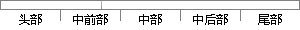

当系统跳转到初始化处后，就可以开始设置相关的硬件了。
片段位置图

相似结果
相似片段：化生成硬件相关的源代码,简化和加速嵌入式操作系统...完成这些设置后,系统即准备就绪,可以开始编写首个...(PC)值设置成该异常中断的中断向量地址,从而跳转到...
| 标题 | 《嵌入式操作系统移植的可视化配置技术研究》 |
| 对比库 | 中国学位论文全文数据库 |
| 作者 | 牛丽娟 |
| 机构 | 南京理工大学 |
| 分类 | 计算机应用技术 |
| 年份 | 2006 |
| 相似率 | 63.16% （轻度抄袭） |
※ 片段修改建议 ※
近似词参考：- 开始：起头 入手下手 最先
- 就可以：就能够 就能
- 系统：体系
- 相关：相干
系统自动生成语句：当体系跳转到初始化处后，就能够起头设置相干的硬件了。
注：本片段修改建议为系统自动生成，仅供参考。